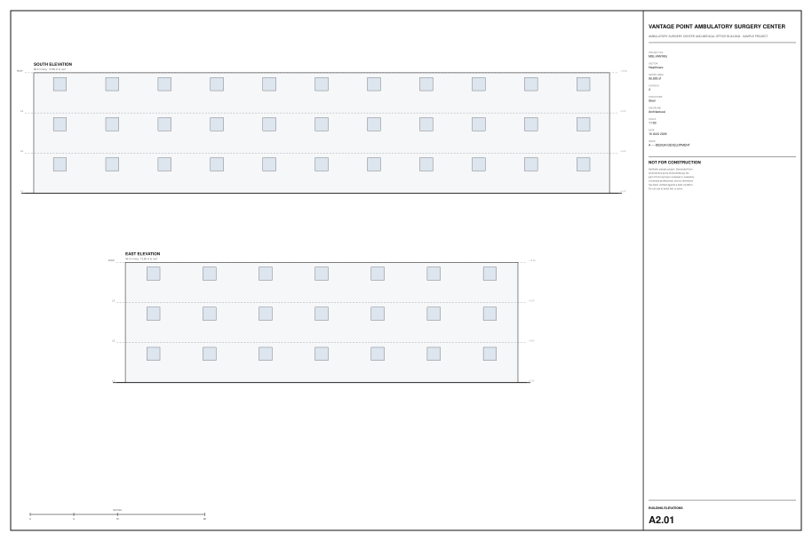
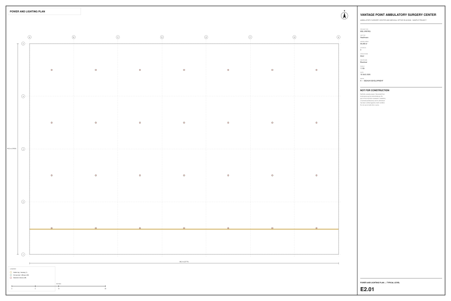
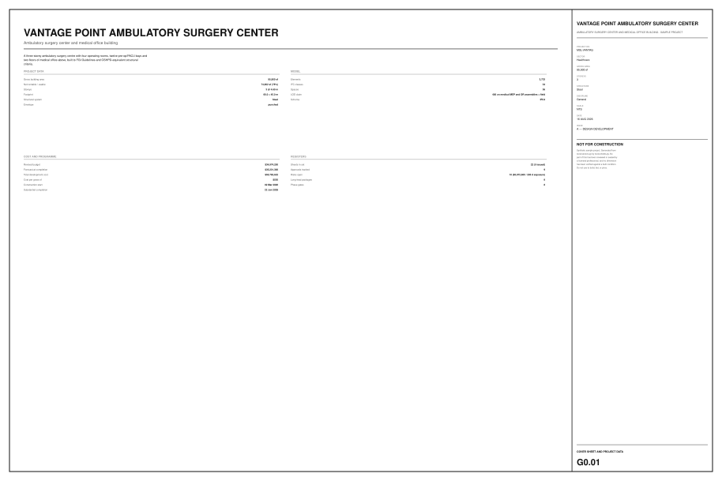
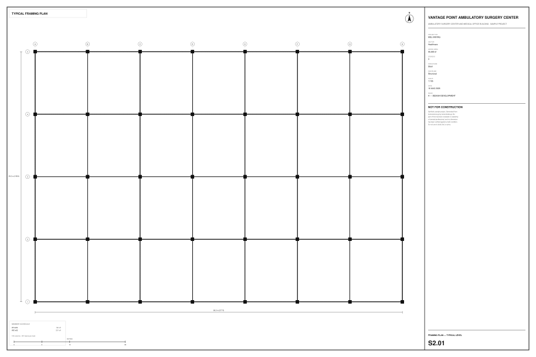

Issued drawings
Generated from the model — column positions, wall runs, space polygons and grid spacing are read out of the IFC — so a sheet cannot drift from the building it documents. ARCH-D, 5 of 22 registered sheets issued.




